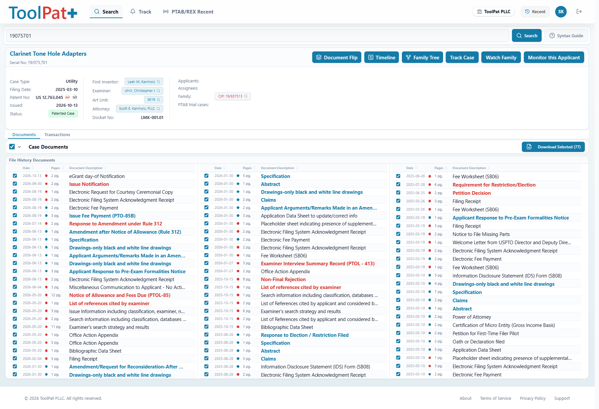
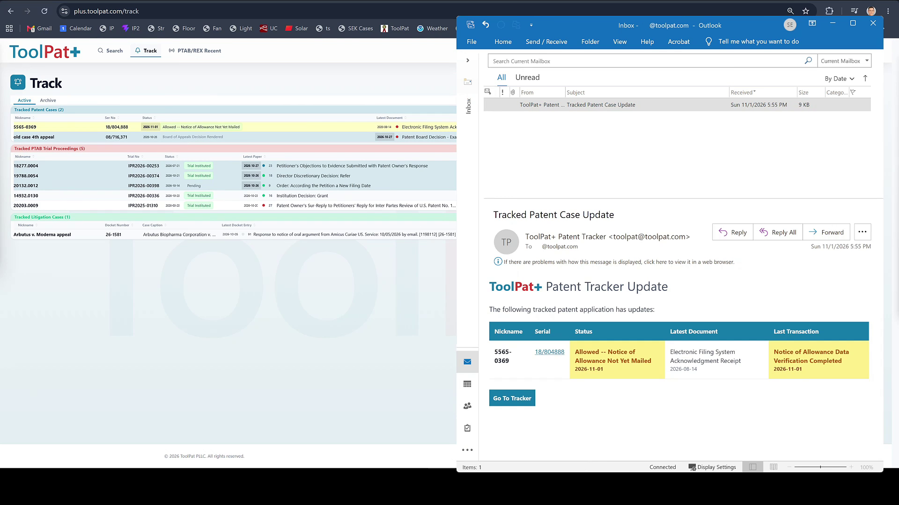
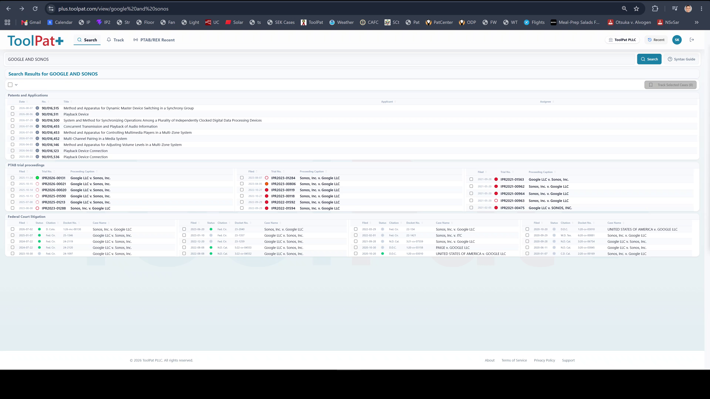

File wrappers
in seconds.
- One-click view or download
- Color-coded documents
- Patents, Reexams, and PTAB trials

Patent family
navigator.
- Interactive family trees
- Includes PTAB and Reexam challenges
-
See new cases before publication

Case Tracker.
- Patents, Reexams, PTAB, and litigation
- Track an Assignee's new filings
-
Detect new family members
-
Status Dashboard plus email alerts

Unified search.
- Search patents, PTAB, and litigation
- Single query searches all 3 databases
- View or track each case with a click

A message from the developer.
Dear fellow patent professional,
I built
Please create your free account, try it out, and let me know what you think!
Scott E. Kamholz, M.D., Ph.D.
Patent Attorney & Founder, ToolPat